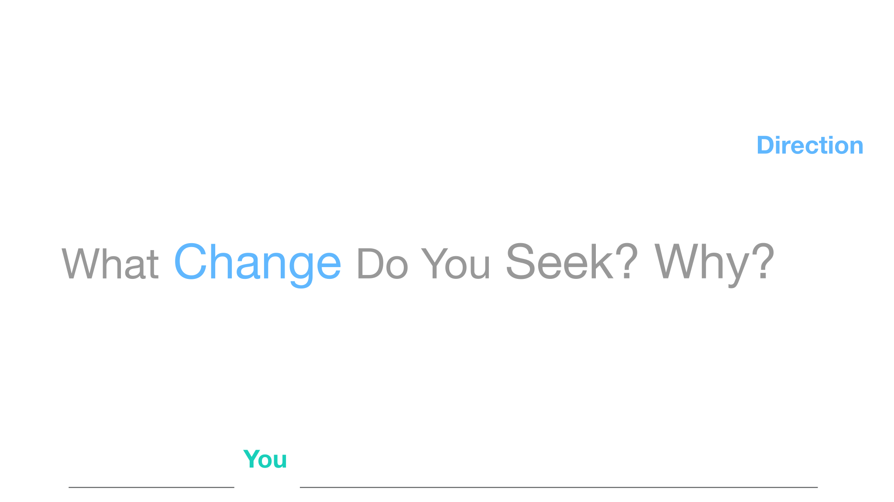
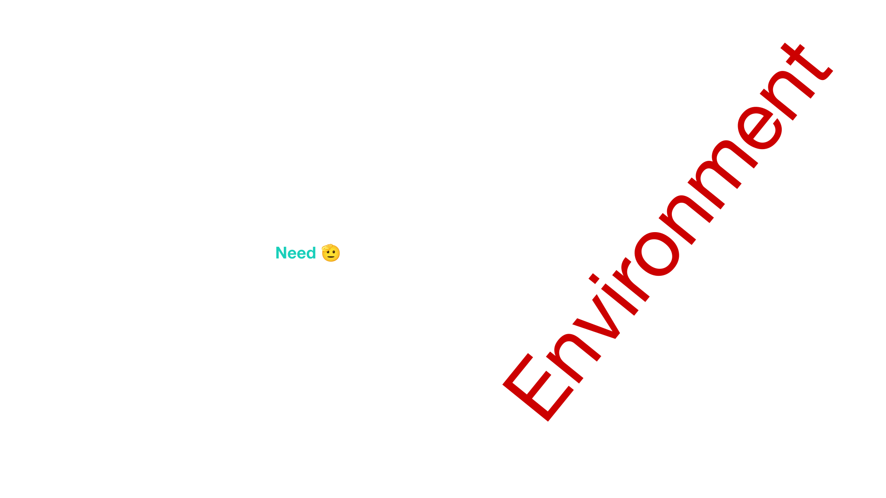
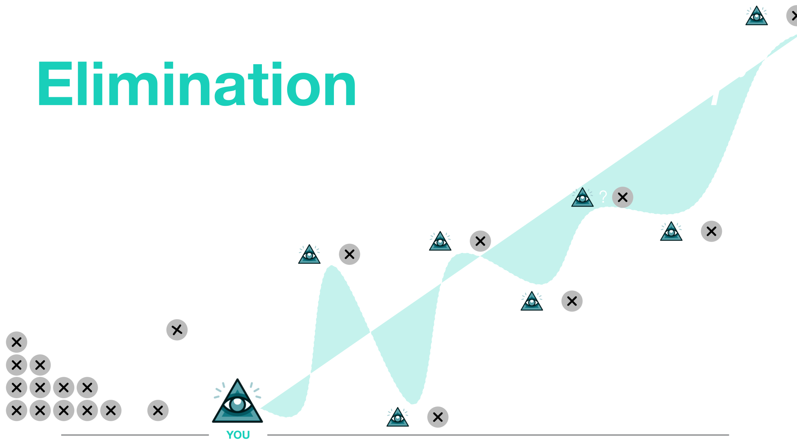
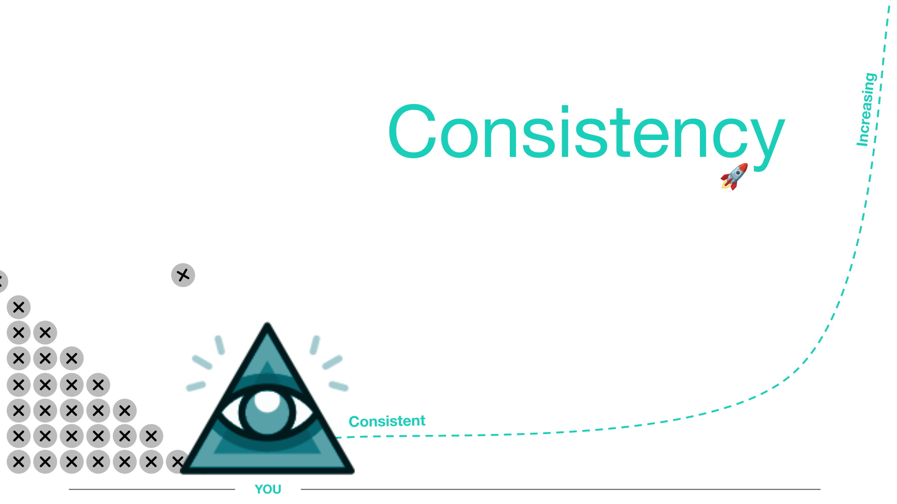

2 coordinates and a step small enough to take.
That pair is the frame. Without it, focus is just another "should."

Watching with a defined focus is a move. You don't have to have changed. You have to know what you're looking for.

This isn't something I read. It's what learning to navigate myself — and to lead teams — was actually about.
How I got here
For most of my life I was very good at other people and very late to myself.
A child the room needed to manage - not being enough
I grew up in a family that had to make it. I was loud, fast, curious — a child the environment felt it needed to manage. School was a strive-world I wanted in on and somehow could not hold. That feeling settled in as a fact: I am not enough.
I left myself in order to stay with other people
So I turned outward. I learned to read rooms, to follow friends, to understand clients. I became useful. Startups, product, a small firm, a global company. From the outside the story can be told as adventure: Austria, Australia, Malaysia, Sweden, Poland. From the inside it was often fear with a good costume. I pushed. When it did not land, I pushed more. A therapist once said I had been thrown in the water without being taught to swim. That was accurate. A lot of movement. Not much grace.
Two things that changed the water: a runway, and shared perspectives
Two things slowly changed the water.
One was money treated as safety, not status. In Kuala Lumpur I was broke and in debt to family. I put cash in piles on the table so I could see what a week actually cost — small steps, close to where I was. That habit, over years, became a runway. The runway is what later let me say no.
The other was a way of working I found because I could not be the boss who just decides. I was too unsure for that. So I gathered every perspective I could — investors, developers, customers — wrote down what I thought I understood, and brought it back: tell me what doesn't fit. We made a shared picture. Sometimes the picture said: this product has no use case. Sometimes it got us more time. That cycle is the development spiral you've already seen above.
I could not find my place, so I disappeared into myself
The cost of living only outward arrived on schedule. I was tired of shallow rooms. More than that: I could not find my place. The system was exhausted from trying to fit — from being something I was not. I disappeared into podcasts, slides, long stretches alone. I was building an understanding of the world and skipping the system that was doing the building.
What authentic connection costs
I lost my father. I lost my younger brother, Jaś. I know what it is to love someone and not be able to save them. That did not make me wise. It taught me acceptance. It made me serious about what contact costs.
I turned the method around. The last customer was me.
I quit a job that praised me and would not take the change. I turned the same method I had used on markets onto myself. Coaching, mediation, presence work. The last customer was me. I had spent almost no time trying to understand him.
What I found — and what is still ahead
What I found is ordinary and specific. A nervous system that runs hot. A mind that maps everything and struggles to finish. A critic trained on "you should be otherwise" focused on everything that is "wrong". Skill with people that was real, and a story about myself that was not. The work now is not another map for its own sake. It is letting the map guide the body — embodiment still ahead of me. I am teaching my body to change, led by a mind that increasingly understands what change I want and why I need it.
I am not selling a finished self. I am an example that the hardest system to see is your own. It is also the one with the most leverage over your actual experience. You need other people's perspectives to catch what your autopilot is defending. Change costs energy. The old system will try to keep the status quo. That is not a moral failure.
Next is the map of that system — where you stand, before you try to move. Ground.
Ground

The nest on the left is old hypotheses, built on a misread — mostly what the environment taught us to want.
I treat the distinction as a working map, not something I already live cleanly.

Listen includes the sound inside — language is built on speech, so that interpretation often arrives as voice. Observe that voice and what you see. Sense what the body does.
You have blind spots. They only show up in other people's view.
The hard part isn't collecting that view. It's catching the reflex that treats it as an attack on who you are — and not letting that reflex close the map.
Where is my attention right now?
What do I actually need in this moment?
How do I say it clearly and stay curious about yours?
Spiral



Do you reflect on what you feel, not only on what you think happened?
Begin here
- A first picture of where you are — need vs want
- One direction
- One step you can take this week
I don't sell a finished self. I sit with you until the picture is good enough to move.